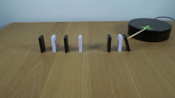
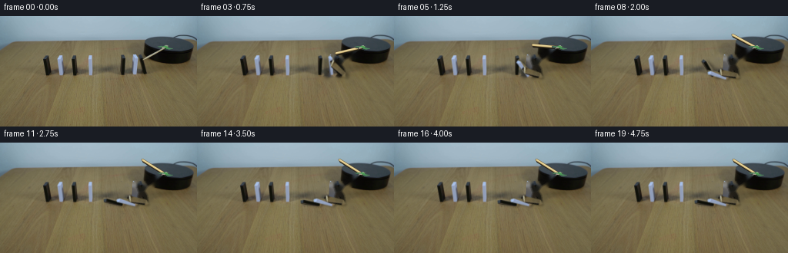
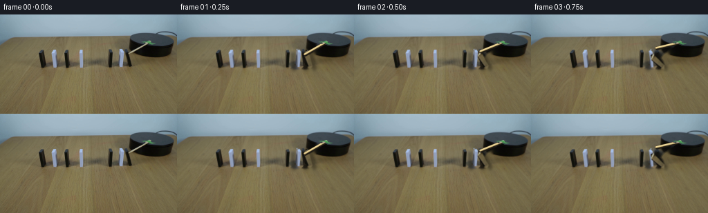
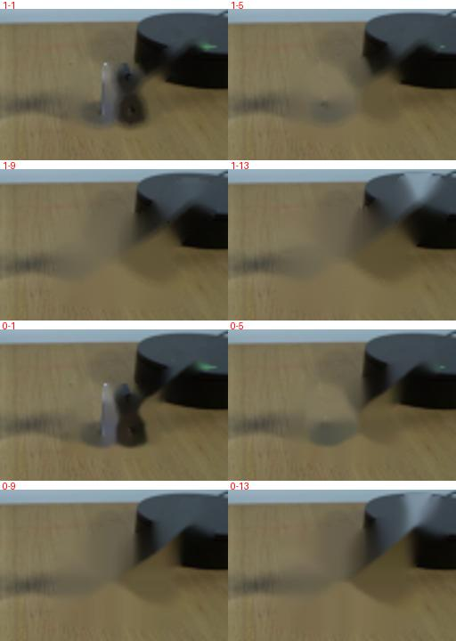
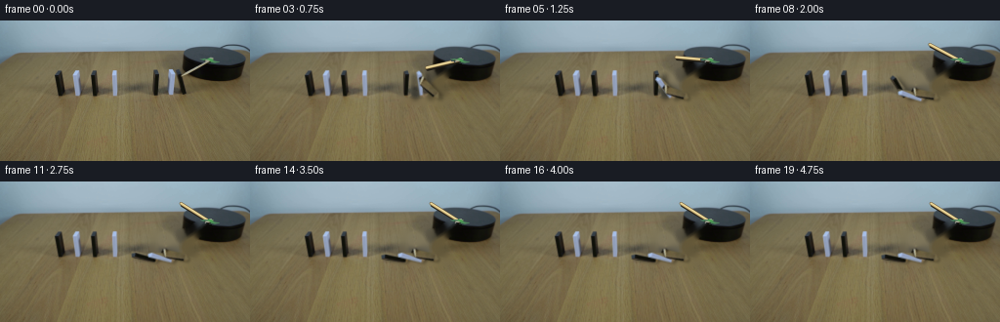

CODING AGENTS AS PIXEL WORLD MODELS
traex/GPT-5.6-Sol · 0050
点击播放 · 原生 RGB 像素
逐轮保存的候选
回放视频、检查图与代码变化。
每份候选均可单独播放。实际图片检查记录在下方工具轨迹中。
候选 01播放与检查图
点击播放 · 原生 RGB 像素

展开代码变化
--- 上一保存版本
+++ 本次保存版本
@@ -0,0 +1,145 @@
+from pathlib import Path
+import numpy as np
+import cv2
+from PIL import Image
+import artifact_io
+
+CASE_DIR = Path(__file__).resolve().parent
+SRC = np.asarray(Image.open(CASE_DIR / 'first_frame.png').convert('RGB'), dtype=np.uint8)
+H, W = SRC.shape[:2]
+
+
+def soft_polygon(points, blur=0.55):
+ """Antialiased, single-channel object matte."""
+ s = 4
+ m = np.zeros((H*s, W*s), np.uint8)
+ p = np.round(np.asarray(points, np.float32)*s).astype(np.int32)
+ cv2.fillConvexPoly(m, p, 255, lineType=cv2.LINE_AA)
+ m = cv2.resize(m, (W,H), interpolation=cv2.INTER_AREA)
+ if blur:
+ m = cv2.GaussianBlur(m, (0,0), blur)
+ return m
+
+# The three blocks in the row reached by the arm. Their image texture is
+# retained from the photograph and rotated about the foot touching the table.
+blocks = [
+ dict(name='left-black', pivot=(161.5,78.5), alpha0=0.0,
+ poly=[(157.0,52.5),(163.1,50.7),(165.0,76.7),(161.8,79.4),(157.5,77.2)]),
+ dict(name='white', pivot=(178.8,78.5), alpha0=0.0,
+ poly=[(174.2,52.0),(179.4,50.1),(182.4,75.7),(179.2,79.2),(174.6,77.2)]),
+ dict(name='right-black', pivot=(192.4,78.7), alpha0=11.0,
+ poly=[(185.7,57.2),(189.1,51.0),(193.1,51.8),(196.1,75.3),(192.5,79.5),(189.5,77.4)]),
+]
+for b in blocks:
+ b['matte'] = soft_polygon(b['poly'], .38)
+
+# Remove the original moving pieces, their cast shadows, and the original arm.
+# Telea fill preserves the low-frequency table grain and reconstructs the small
+# exposed sliver of the black platform behind the nearest domino.
+remove = np.zeros((H,W), np.uint8)
+for b in blocks:
+ remove = np.maximum(remove, (b['matte'] > 8).astype(np.uint8)*255)
+# old elongated shadows on the wood
+for pts in [
+ [(154,76),(166,73),(181,79),(177,84),(157,82)],
+ [(171,76),(181,74),(196,79),(193,84),(174,82)],
+ [(186,74),(196,72),(204,78),(201,83),(187,82)],
+]:
+ cv2.fillConvexPoly(remove, np.asarray(pts,np.int32), 255)
+# wooden arm from free end to the green clamp
+cv2.line(remove, (184,64), (214,39), 255, 7, cv2.LINE_AA)
+# Slight expansion catches compressed edge halos.
+remove = cv2.dilate(remove, cv2.getStructuringElement(cv2.MORPH_ELLIPSE,(3,3)))
+plate_bgr = cv2.inpaint(cv2.cvtColor(SRC,cv2.COLOR_RGB2BGR), remove, 3, cv2.INPAINT_TELEA)
+PLATE = cv2.cvtColor(plate_bgr,cv2.COLOR_BGR2RGB)
+
+# Restore the green clamp from the original after drawing each arm. Its matte
+# is color-selected and limited to the pivot area.
+yy,xx = np.mgrid[:H,:W]
+green = ((SRC[:,:,1] > SRC[:,:,0]*1.08) & (SRC[:,:,1] > SRC[:,:,2]*1.03) &
+ (xx>=203)&(xx<=226)&(yy>=35)&(yy<=49)).astype(np.uint8)*255
+green = cv2.dilate(green, np.ones((2,2),np.uint8))
+green = cv2.GaussianBlur(green,(0,0),.4)
+
+
+def over(dst, rgb, matte):
+ a = matte.astype(np.float32)[...,None] / 255.0
+ return np.clip(dst.astype(np.float32)*(1-a) + rgb.astype(np.float32)*a, 0,255).astype(np.uint8)
+
+
+def rotate_layer(rgb, matte, pivot, degrees):
+ # OpenCV positive image rotation moves an upright top toward screen-left.
+ M = cv2.getRotationMatrix2D(tuple(pivot), degrees, 1.0)
+ wrgb = cv2.warpAffine(rgb, M, (W,H), flags=cv2.INTER_CUBIC,
+ borderMode=cv2.BORDER_CONSTANT, borderValue=(0,0,0))
+ wa = cv2.warpAffine(matte, M, (W,H), flags=cv2.INTER_LINEAR,
+ borderMode=cv2.BORDER_CONSTANT, borderValue=0)
+ return wrgb, wa
+
+
+def shadow_for(matte, fall_deg):
+ """Soft table shadow; it shortens as the block approaches the surface."""
+ # Tall pieces cast rightward; fallen pieces sit close to their shadow.
+ q = min(1.0, max(0.0, fall_deg/82.0))
+ dx = 8.0*(1-q) + 2.0*q
+ dy = 3.2*(1-q) + 1.5*q
+ M = np.float32([[1,0,dx],[0,1,dy]])
+ sm = cv2.warpAffine(matte, M, (W,H), flags=cv2.INTER_LINEAR,
+ borderMode=cv2.BORDER_CONSTANT, borderValue=0)
+ sigma = 2.0*(1-q) + .8*q
+ sm = cv2.GaussianBlur(sm,(0,0),sigma)
+ return (sm.astype(np.float32) * (0.22 + .07*(1-q))).astype(np.uint8)
+
+
+def draw_arm(frame, angle_deg):
+ # Supersample only this narrow element for clean photographic edges.
+ s=4
+ hi=cv2.resize(frame,(W*s,H*s),interpolation=cv2.INTER_CUBIC)
+ pivot=np.array([214.0,40.5])
+ length=34.0
+ th=np.deg2rad(angle_deg)
+ tip=pivot + length*np.array([np.cos(th),np.sin(th)])
+ p=tuple(np.round(pivot*s).astype(int)); t=tuple(np.round(tip*s).astype(int))
+ # diffuse contact shadow followed by dark lower edge, wood, and highlight
+ cv2.line(hi, (t[0]+4,t[1]+7), (p[0]+3,p[1]+5), (32,29,22), 11, cv2.LINE_AA)
+ cv2.line(hi, t, p, (96,76,45), 12, cv2.LINE_AA)
+ cv2.line(hi, t, p, (211,188,128), 8, cv2.LINE_AA)
+ cv2.line(hi, (t[0],t[1]-2), (p[0],p[1]-2), (237,217,157), 3, cv2.LINE_AA)
+ out=cv2.resize(hi,(W,H),interpolation=cv2.INTER_AREA)
+ # clamp lies over the arm at its axle
+ out=over(out,SRC,green)
+ return out
+
+# Angles in screen space. The rightmost block is already just beginning to lean
+# in the supplied first exposure. Impacts propagate from right to left and stop
+# at the conspicuous central gap.
+a_right = [11,18,31,48,63,73,78,80,80,80,80,80,80,80,80,80,80,80,80,80]
+a_white = [0,0,0,8,20,37,54,66,73,76,76,76,76,76,76,76,76,76,76,76]
+a_left = [0,0,0,0,0,0,7,18,34,51,67,78,82,82,82,82,82,82,82,82]
+angles=[a_left,a_white,a_right]
+arm_angles=[143,150,158,167,176,185,193,201,208,212,212,212,212,212,212,212,212,212,212,212]
+
+frames=[SRC.copy()]
+for fi in range(1,20):
+ frame=PLATE.copy()
+ layers=[]
+ for bi,b in enumerate(blocks):
+ deg=angles[bi][fi]
+ delta=deg-b['alpha0']
+ obj, mat=rotate_layer(SRC,b['matte'],b['pivot'],delta)
+ layers.append((bi,deg,obj,mat))
+ # Shadows all belong under all solid pieces.
+ for bi,deg,obj,mat in layers:
+ sh=shadow_for(mat,deg)
+ black=np.zeros_like(frame)
+ frame=over(frame,black,sh)
+ # Leftmost first; later falling blocks naturally rest over the one struck.
+ for bi,deg,obj,mat in layers:
+ frame=over(frame,obj,mat)
+ frame=draw_arm(frame,arm_angles[fi])
+ frames.append(frame)
+
+frames=np.stack(frames).astype(np.uint8)
+assert frames.shape==(20,144,256,3)
+assert np.array_equal(frames[0],SRC)
+artifact_io.save(frames, CASE_DIR)
候选 02播放与检查图
点击播放 · 原生 RGB 像素

展开代码变化
--- 上一保存版本 +++ 本次保存版本 @@ -49,8 +49,8 @@ # wooden arm from free end to the green clamp cv2.line(remove, (184,64), (214,39), 255, 7, cv2.LINE_AA) # Slight expansion catches compressed edge halos. -remove = cv2.dilate(remove, cv2.getStructuringElement(cv2.MORPH_ELLIPSE,(3,3))) -plate_bgr = cv2.inpaint(cv2.cvtColor(SRC,cv2.COLOR_RGB2BGR), remove, 3, cv2.INPAINT_TELEA) +remove = cv2.dilate(remove, cv2.getStructuringElement(cv2.MORPH_ELLIPSE,(7,7))) +plate_bgr = cv2.inpaint(cv2.cvtColor(SRC,cv2.COLOR_RGB2BGR), remove, 5, cv2.INPAINT_TELEA) PLATE = cv2.cvtColor(plate_bgr,cv2.COLOR_BGR2RGB) # Restore the green clamp from the original after drawing each arm. Its matte
候选 03播放与检查图

可观测工具轨迹
实际执行的命令与返回图片。
命令 1exit 0
/bin/bash -lc "cat GENERATION_RULES.md && printf '\\n---PROMPT---\\n' && cat prompt.txt"
命令 2exit 0
/bin/bash -lc "find . -maxdepth 2 -type f -printf '%p %s bytes\\n' | sort"
命令 3exit 0
/bin/bash -lc "python - <<'PY'
from PIL import Image
im=Image.open('first_frame.png')
print(im.mode,im.size)
try:
import cv2; print('cv2',cv2.__version__)
except Exception as e: print('no cv2',e)
import numpy as np
print(np.asarray(im).min(),np.asarray(im).max())
PY"命令 4exit 0
/bin/bash -lc "python - <<'PY'
from PIL import Image
im=Image.open('first_frame.png'); im.resize((1024,576)).save('.tmp/up.png')
PY"命令 5exit 0
/bin/bash -lc "sed -n '1,240p' artifact_io.py"
命令 6exit 0
/bin/bash -lc "cat > generate.py <<'PY'
from pathlib import Path
import numpy as np
import cv2
from PIL import Image
import artifact_io
CASE_DIR = Path(__file__).resolve().parent
SRC = np.asarray(Image.open(CASE_DIR / 'first_frame.png').convert('RGB'), dtype=np.uint8)
H, W = SRC.shape[:2]
def soft_polygon(points, blur=0.55):
\"\"\"Antialiased, single-channel object matte.\"\"\"
s = 4
m = np.zeros((H*s, W*s), np.uint8)
p = np.round(np.asarray(points, np.float32)*s).astype(np.int32)
cv2.fillConvexPoly(m, p, 255, lineType=cv2.LINE_AA)
m = cv2.resize(m, (W,H), interpolation=cv2.INTER_AREA)
if blur:
m = cv2.GaussianBlur(m, (0,0), blur)
return m
# The three blocks in the row reached by the arm. Their image texture is
# retained from the photograph and rotated about the foot touching the table.
blocks = [
dict(name='left-black', pivot=(161.5,78.5), alpha0=0.0,
poly=[(157.0,52.5),(163.1,50.7),(165.0,76.7),(161.8,79.4),(157.5,77.2)]),
dict(name='white', pivot=(178.8,78.5), alpha0=0.0,
poly=[(174.2,52.0),(179.4,50.1),(182.4,75.7),(179.2,79.2),(174.6,77.2)]),
dict(name='right-black', pivot=(192.4,78.7), alpha0=11.0,
poly=[(185.7,57.2),(189.1,51.0),(193.1,51.8),(196.1,75.3),(192.5,79.5),(189.5,77.4)]),
]
for b in blocks:
b['matte'] = soft_polygon(b['poly'], .38)
# Remove the original moving pieces, their cast shadows, and the original arm.
# Telea fill preserves the low-frequency table grain and reconstructs the small
# exposed sliver of the black platform behind the nearest domino.
remove = np.zeros((H,W), np.uint8)
for b in blocks:
remove = np.maximum(remove, (b['matte'] > 8).astype(np.uint8)*255)
# old elongated shadows on the wood
for pts in [
[(154,76),(166,73),(181,79),(177,84),(157,82)],
[(171,76),(181,74),(196,79),(193,84),(174,82)],
[(186,74),(196,72),(204,78),(201,83),(187,82)],
]:
cv2.fillConvexPoly(remove, np.asarray(pts,np.int32), 255)
# wooden arm from free end to the green clamp
cv2.line(remove, (184,64), (214,39), 255, 7, cv2.LINE_AA)
# Slight expansion catches compressed edge halos.
remove = cv2.dilate(remove, cv2.getStructuringElement(cv2.MORPH_ELLIPSE,(3,3)))
plate_bgr = cv2.inpaint(cv2.cvtColor(SRC,cv2.COLOR_RGB2BGR), remove, 3, cv2.INPAINT_TELEA)
PLATE = cv2.cvtColor(plate_bgr,cv2.COLOR_BGR2RGB)
# Restore the green clamp from the original after drawing each arm. Its matte
# is color-selected and limited to the pivot area.
yy,xx = np.mgrid[:H,:W]
green = ((SRC[:,:,1] > SRC[:,:,0]*1.08) & (SRC[:,:,1] > SRC[:,:,2]*1.03) &
(xx>=203)&(xx<=226)&(yy>=35)&(yy<=49)).astype(np.uint8)*255
green = cv2.dilate(green, np.ones((2,2),np.uint8))
green = cv2.GaussianBlur(green,(0,0),.4)
def over(dst, rgb, matte):
a = matte.astype(np.float32)[...,None] / 255.0
return np.clip(dst.astype(np.float32)*(1-a) + rgb.astype(np.float32)*a, 0,255).astype(np.uint8)
def rotate_layer(rgb, matte, pivot, degrees):
# OpenCV positive image rotation moves an upright top toward screen-left.
M = cv2.getRotationMatrix2D(tuple(pivot), degrees, 1.0)
wrgb = cv2.warpAffine(rgb, M, (W,H), flags=cv2.INTER_CUBIC,
borderMode=cv2.BORDER_CONSTANT, borderValue=(0,0,0))
wa = cv2.warpAffine(matte, M, (W,H), flags=cv2.INTER_LINEAR,
borderMode=cv2.BORDER_CONSTANT, borderValue=0)
return wrgb, wa
def shadow_for(matte, fall_deg):
\"\"\"Soft table shadow; it shortens as the block approaches the surface.\"\"\"
# Tall pieces cast rightward; fallen pieces sit close to their shadow.
q = min(1.0, max(0.0, fall_deg/82.0))
dx = 8.0*(1-q) + 2.0*q
dy = 3.2*(1-q) + 1.5*q
M = np.float32([[1,0,dx],[0,1,dy]])
sm = cv2.warpAffine(matte, M, (W,H), flags=cv2.INTER_LINEAR,
borderMode=cv2.BORDER_CONSTANT, borderValue=0)
sigma = 2.0*(1-q) + .8*q
sm = cv2.GaussianBlur(sm,(0,0),sigma)
return (sm.astype(np.float32) * (0.22 + .07*(1-q))).astype(np.uint8)
def draw_arm(frame, angle_deg):
# Supersample only this narrow element for clean photographic edges.
s=4
hi=cv2.resize(frame,(W*s,H*s),interpolation=cv2.INTER_CUBIC)
pivot=np.array([214.0,40.5])
length=34.0
th=np.deg2rad(angle_deg)
tip=pivot + length*np.array([np.cos(th),np.sin(th)])
p=tuple(np.round(pivot*s).astype(int)); t=tuple(np.round(tip*s).astype(int))
# diffuse contact shadow followed by dark lower edge, wood, and highlight
cv2.line(hi, (t[0]+4,t[1]+7), (p[0]+3,p[1]+5), (32,29,22), 11, cv2.LINE_AA)
cv2.line(hi, t, p, (96,76,45), 12, cv2.LINE_AA)
cv2.line(hi, t, p, (211,188,128), 8, cv2.LINE_AA)
cv2.line(hi, (t[0],t[1]-2), (p[0],p[1]-2), (237,217,157), 3, cv2.LINE_AA)
out=cv2.resize(hi,(W,H),interpolation=cv2.INTER_AREA)
# clamp lies over the arm at its axle
out=over(out,SRC,green)
return out
# Angles in screen space. The rightmost block is already just beginning to lean
# in the supplied first exposure. Impacts propagate from right to left and stop
# at the conspicuous central gap.
a_right = [11,18,31,48,63,73,78,80,80,80,80,80,80,80,80,80,80,80,80,80]
a_white = [0,0,0,8,20,37,54,66,73,76,76,76,76,76,76,76,76,76,76,76]
a_left = [0,0,0,0,0,0,7,18,34,51,67,78,82,82,82,82,82,82,82,82]
angles=[a_left,a_white,a_right]
arm_angles=[143,150,158,167,176,185,193,201,208,212,212,212,212,212,212,212,212,212,212,212]
frames=[SRC.copy()]
for fi in range(1,20):
frame=PLATE.copy()
layers=[]
for bi,b in enumerate(blocks):
deg=angles[bi][fi]
delta=deg-b['alpha0']
obj, mat=rotate_layer(SRC,b['matte'],b['pivot'],delta)
layers.append((bi,deg,obj,mat))
# Shadows all belong under all solid pieces.
for bi,deg,obj,mat in layers:
sh=shadow_for(mat,deg)
black=np.zeros_like(frame)
frame=over(frame,black,sh)
# Leftmost first; later falling blocks naturally rest over the one struck.
for bi,deg,obj,mat in layers:
frame=over(frame,obj,mat)
frame=draw_arm(frame,arm_angles[fi])
frames.append(frame)
frames=np.stack(frames).astype(np.uint8)
assert frames.shape==(20,144,256,3)
assert np.array_equal(frames[0],SRC)
artifact_io.save(frames, CASE_DIR)
PY
python generate.py
ls -l pixels.npz inspection.png transition_check.png frames/00.png frames/19.png"命令 7exit 0
/bin/bash -lc "python - <<'PY'
import cv2,numpy as np
from PIL import Image,ImageDraw
im=np.array(Image.open('first_frame.png'))
# reconstruct current mask through import
import generate
mask=generate.remove
outs=[]
for alg in [cv2.INPAINT_TELEA,cv2.INPAINT_NS]:
for d in [1,5,9,13]:
m=cv2.dilate(mask,np.ones((d,d),np.uint8))
o=cv2.cvtColor(cv2.inpaint(cv2.cvtColor(im,cv2.COLOR_RGB2BGR),m,5,alg),cv2.COLOR_BGR2RGB)
outs.append((f'{alg}-{d}',o))
sheet=Image.new('RGB',(512,4*180),'white');dr=ImageDraw.Draw(sheet)
for i,(name,o) in enumerate(outs):
crop=Image.fromarray(o).crop((125,25,230,95)).resize((420,280))
x=(i%2)*256;y=(i//2)*180
sheet.paste(crop.resize((256,170)),(x,y+10));dr.text((x+3,y),name,fill='red')
sheet.save('.tmp/inpaint.jpg')
PY"命令 8exit 0
/bin/bash -lc "python - <<'PY'
p='generate.py'
s=open(p).read()
s=s.replace(\"remove = cv2.dilate(remove, cv2.getStructuringElement(cv2.MORPH_ELLIPSE,(3,3)))\\nplate_bgr = cv2.inpaint(cv2.cvtColor(SRC,cv2.COLOR_RGB2BGR), remove, 3, cv2.INPAINT_TELEA)\",\"remove = cv2.dilate(remove, cv2.getStructuringElement(cv2.MORPH_ELLIPSE,(7,7)))\\nplate_bgr = cv2.inpaint(cv2.cvtColor(SRC,cv2.COLOR_RGB2BGR), remove, 5, cv2.INPAINT_TELEA)\")
open(p,'w').write(s)
PY
python generate.py
python - <<'PY'
from PIL import Image
import numpy as np
im=np.asarray(Image.open('first_frame.png'))
f=np.asarray(Image.open('frames/00.png'))
print('frame0 identical:',np.array_equal(im,f),'shape',f.shape,'outputs',len(list(__import__('pathlib').Path('frames').glob('*.png'))))
PY"视觉工具实际返回图片 1

视觉工具实际返回图片 2

视觉工具实际返回图片 3

视觉工具实际返回图片 4

视觉工具实际返回图片 5

视觉工具实际返回图片 6

保存候选 3 份；完成命令 8 次；可验证图片返回 6 张。原始 API 响应与完整日志保留在本地。